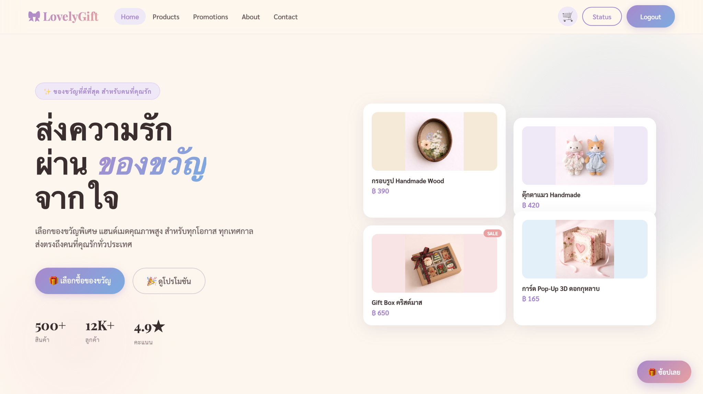
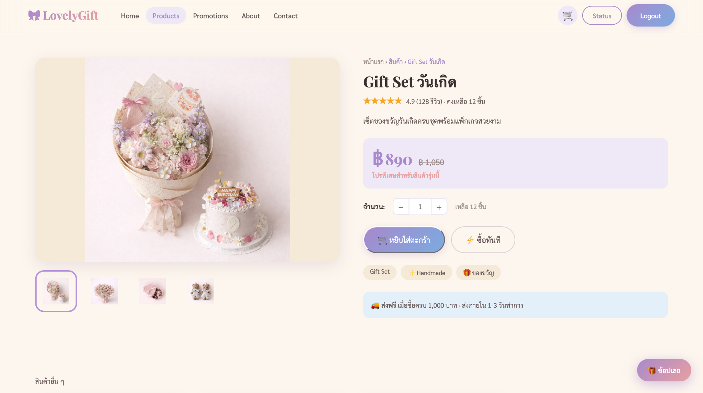
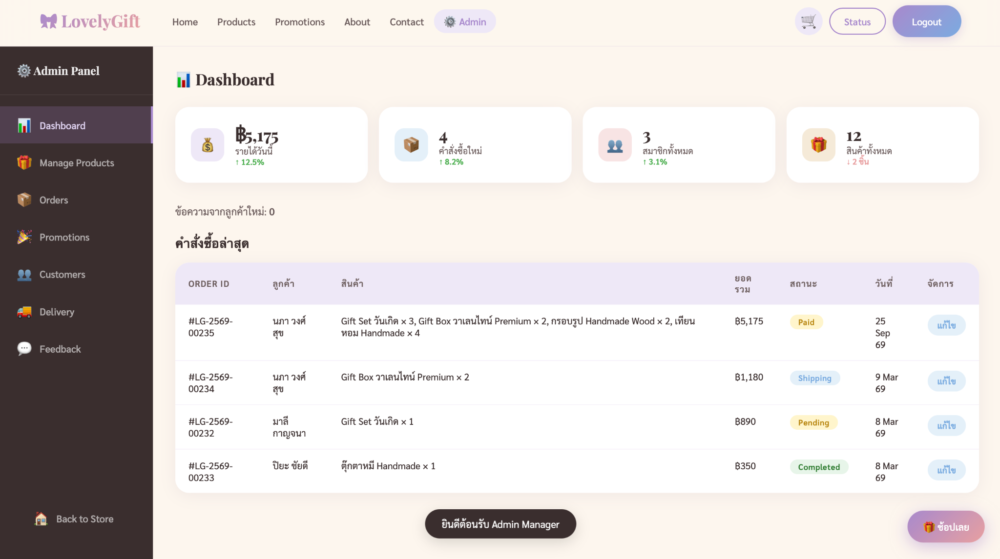

Web Application
LovelyGift
เว็บไซต์ร้านขายของขวัญออนไลน์
วิเคราะห์ความต้องการและวางโครงสร้างระบบสำหรับลูกค้าและผู้ดูแลระบบ พร้อมฟังก์ชันการเลือกสินค้า การสั่งซื้อ การชำระเงิน การจัดการสินค้า โปรโมชั่น และสถานะการจัดส่ง
ดูโปรเจกต์บน GitHub →